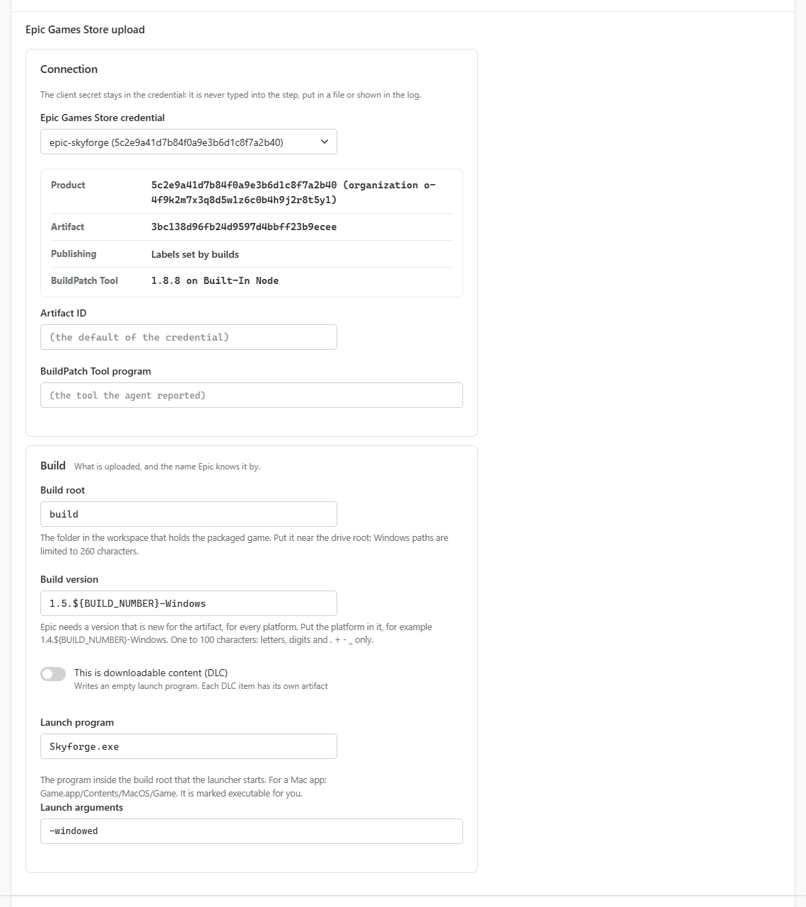
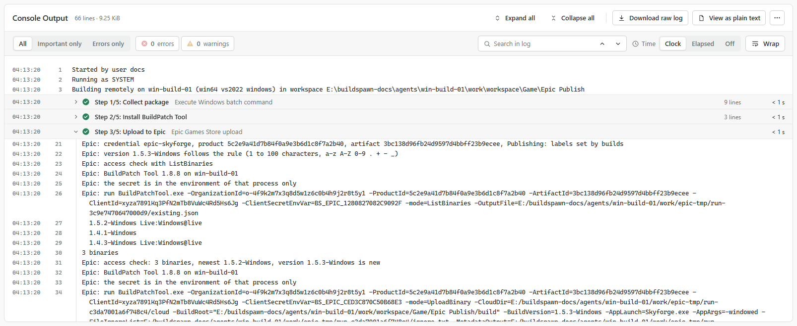

Upload a packaged game to Epic as a new binary, with its launch program, files, prerequisites and metadata.
When to use it
Use it at the end of a build that has made a packaged game folder, when you want that build on the Epic Games Store. It is the step that creates a new binary. After it, optimise the patch and label the binary.
Every Epic step runs the Epic BuildPatch Tool on the agent. The agent needs the tool: see Install BuildPatch Tool. A step that needs a newer tool than the agent has stops with a message that names the version the agent has.
How to set it up
Open the build configuration, then Settings › Build steps › Add build step.
Type Epic in Filter step types and click Epic Games Store upload.
Under Connection, pick the Epic Games Store credential. The box below it shows the product, artifact, publishing mode and tool that were found.
Under Build, type the Build root, the Build version and the Launch program.
Choose which files go in, and fill in any other section you need.
Check the Command summary at the bottom. The secret shows only as the name of an environment variable.
Click Save.

The Epic Games Store upload step: Connection and Build.
Every field
Connection
Field
What it does
Default
Example
Epic Games Store credential
The credential that holds your BuildPatch Tool keys. The list shows the credentials you may use. The secret is never typed in the step, never written to a file and never shown in the log.
None. The step fails if you pick nothing.
Epic Store (Skyforge)
Artifact ID
The Epic artifact to work on. Leave it empty to use the Default artifact ID of the credential.
Empty (the credential default)
0f2b8a6c9d1e4c37a5e8b1d6c2f94a70
BuildPatch Tool program
The full path of the BuildPatch Tool program on the agent. Leave it empty to use the tool the agent reported.
Empty (the tool the agent reported)
D:/Tools/BuildPatchTool/BuildPatchTool.exe
Build
Field
What it does
Default
Example
Build root
The folder in the workspace that holds the packaged game. Put it near the drive root: Windows paths are limited to 260 characters. Buildspawn warns when a file path in it is longer than 240.
Empty (required)
build/WindowsPackaged
Build version
The version Epic knows this binary by. It must be new for the artifact, for every platform. One to 100 characters: letters, digits and . + - _ only. The field checks the rule as you type.
${BUILD_NUMBER}
1.4.${BUILD_NUMBER}-Windows
This is downloadable content (DLC)
Tick it when this upload is a DLC item. Buildspawn writes an empty launch program. Each DLC item has its own artifact. The base game and other DLC must not be in the build root, or must be left out with the list below. No two items may hold the same file path.
Off
Off
Launch program
The program inside the build root that the launcher starts. For a Mac app use the path inside it. It is marked executable for you. Required unless DLC is ticked, and it must exist in the build root.
Empty
Skyforge.exe or Game.app/Contents/MacOS/Game
Launch arguments
Arguments the launcher gives the program.
Empty
-windowed
Files
Field
What it does
Default
Example
Everything in the build root
Every file below the build root goes in.
Chosen
-
Only these files
Nothing but the files in the list goes in.
Not chosen
-
Everything except these
All files except the ones in the list.
Not chosen
-
List
One entry per line: a path in the build root with forward slashes. In the list to leave out you can also write R"regular expression" or W"wildcard*". Lines that start with # are comments. The list is written to a file outside the build root. Needs BuildPatch Tool 1.6.0 for R"..." and W"...".
Empty
Content/Movies/intro.bk2
File attributes
Mark files executable, or give them tags. The launch program does not need to be listed. Tags feed the launcher's selective download, which Epic calls beta: ask an Epic representative before you use it.
Field
What it does
Default
Example
Files › Add file
Adds one row. Each row has the three fields below.
No rows
-
File (in a row)
The path in the build root.
Empty
Binaries/Win64/Helper.exe
Executable (in a row)
Marks the file executable.
Off
On
Tags (in a row)
Tags for selective download, separated by commas.
Empty
movies
Use my own attributes file
The path of an attributes file you wrote. When set, the rows above are not used.
Empty
Config/epic-attributes.txt
Prerequisites and uninstall
Field
What it does
Default
Example
Prerequisite IDs
The IDs of the prerequisites the game needs, separated by commas.
Empty
VCRedist2022,DirectX9
Prerequisite installer
The installer inside the build root that installs them.
Empty
Prereqs/vc_redist.x64.exe
Prerequisite arguments
Arguments for the installer. The buttons $[RootDirectory], $[LogDirectory] and $[Quote] insert placeholders. They stay as typed. A quote mark you type becomes $[Quote].
Empty
/install /quiet /log $[LogDirectory]vc.log
Uninstall program
A program that cleans up when the player uninstalls. Needs BuildPatch Tool 1.6.0.
Empty
Tools/cleanup.exe
Uninstall arguments
Arguments for it.
Empty
--remove-saves
Metadata and checks
Field
What it does
Default
Example
Save the metadata
Saves what went into the binary as the build artifact epic/metadata-<version>. Needs BuildPatch Tool 1.8.8. With an older tool, Buildspawn fetches the metadata after the upload.
On
On
Metadata format
Shown when the metadata is saved. JSON or Text (human form).
JSON
JSON
Encoding
Shown when the metadata is saved. UTF-8 or UTF-16.
UTF-8
UTF-8
Check access first
Reads the binaries of the artifact before the upload. It fails fast on a wrong key, and fails when the version already exists.
On
On
Verbose logs
More detail in the tool log. Needs BuildPatch Tool 1.7.0.
Off
Off
Options
Field
What it does
Default
Example
Stop after (minutes)
The step is stopped after this time.
180
180
Tries on network errors
How many times the step runs BuildPatch Tool when it fails because of a network problem. A wrong key or a missing permission is never tried again.
1
3
Wait between tries (seconds)
The pause between two tries.
30
60
Save the tool’s logs with the build
Whether the logs BuildPatch Tool wrote on the agent are kept as build artifacts in epic-logs. Choices: Only when the step fails, Always, Never.
Only when the step fails
Always
Keep working data in memory
Uses no cloud folder on disk. For agents with a small disk. Needs BuildPatch Tool 1.8.8. Without it, every run uses a fresh folder on the agent for the tool's working data and deletes it afterwards.
Off
Off
Fail the build on warnings
Fails the step when BuildPatch Tool gave warnings, for example when metadata could not be written. Without it, warnings only show in the log.
Off
On
Hands on to later steps
Name
What it holds
EPIC_BUILD_VERSION
The version that was uploaded.
EPIC_ARTIFACT_ID
The artifact it went to.
EPIC_METADATA_FILE
The saved metadata file, when there is one.
EPIC_LOG_FOLDER
The folder of the saved tool logs, epic-logs, when logs were kept.
A worked example
An Unreal Engine step packaged Skyforge into build/WindowsPackaged. The next step is Epic Games Store upload:
Epic: credential Epic Store (Skyforge), product 8c1d5f, artifact 0f2b8a..., Publishing: Labels set by builds
Epic: version 1.4.57-Windows follows the rule (1 to 100 characters, a-z A-Z 0-9 . + - _)
Epic: access check with ListBinaries
Epic: access check: 12 binaries, newest 1.4.56-Windows, version 1.4.57-Windows is new
Epic: the secret is in the environment of that process only
...
Epic: metadata saved as epic/metadata-1.4.57-Windows.json
Epic: Step output EPIC_BUILD_VERSION = 1.4.57-Windows
Epic: Step output EPIC_ARTIFACT_ID = 0f2b8a...
Epic: the temporary folder is removed
The metadata file is under Artifacts on the build page. The binary appears on the artifact in the Epic Developer Portal.

The console of an upload, with the Epic log lines.
Problems and fixes
Message
What to do
Version ... already exists for artifact ...
Versions must be unique per artifact, for every platform. Include ${BUILD_NUMBER} and the platform in Build version.
The version rule is not met
Use 1 to 100 characters from a-z A-Z 0-9 . + - _.
The step needs a build root
Type the folder that holds the packaged game.
The build root ... is not a folder on this agent
The package step did not make it, or it is relative to a different place. The path is relative to the workspace.